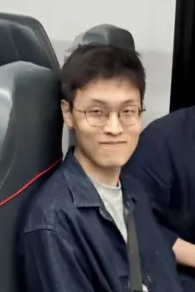

Gene Yang /dʒiːn ja̠ŋ/
> About Me

Train ride, Feb 2026
I am a graduating senior (class of 2026) at Stanford Online High School. I was born in California and lived there before moving to South Korea, where I have now spent most of my life.
Physics has been my guiding passion for the past few years. Currently, I'm interested in elementary particle interactions and their theoretical basis in the Standard Model. Given the geometric elegance of general relativity, along with the fact that early universe models are a natural "laboratory" for high energy physics, I've grown increasingly interested in the intersection of cosmology and particle physics as well.
Classics is another of my affinities. I took the AP Latin exam in 2024 and have studied Ancient Greek independently since 2023. The fate of my prospective classics minor is yet to be determined.
Other than physics and classics, I enjoy medieval fantasy, 2000s-era Romanian EDM, and dabble in lockpicking. At some point, I learned to code, which comes in handy—like when making this page. Stereotypically, I've been playing the violin since 3rd grade. I like pretty much everything Bach, but his Sonata No. 1 in g minor, Fuga is my favorite. (actually playing it is a different question.)